01 · NEGFphph progress
Silicon: convergence by continuation
Reuse each converged solution as the interaction strength increases.
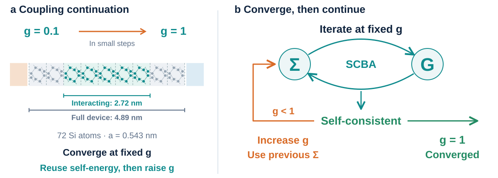
Converge at fixed g, reuse the self-energy, then increase g.
Reuse each converged solution as the interaction strength increases.

Converge at fixed g, reuse the self-energy, then increase g.
The interacting current remains close to its matched harmonic reference.
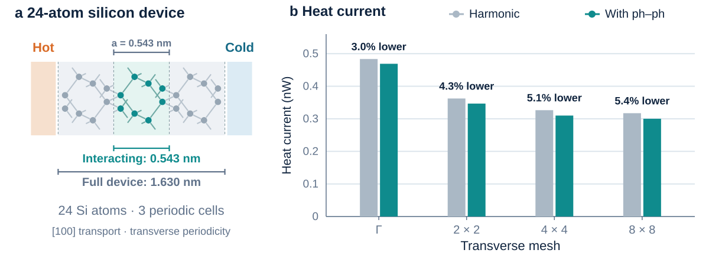
The shortest device shows a 3–5% reduction in heat current.
The small short-device effect motivates longer interacting regions.
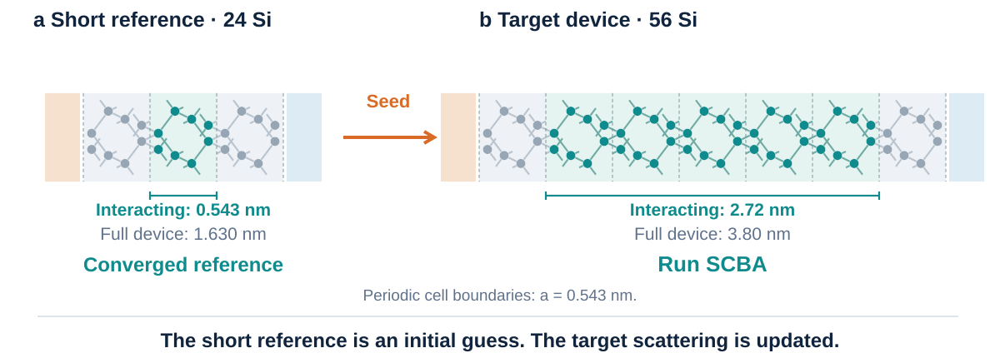
Seed the longer device from the short reference, then converge SCBA.
Matching cell labels connect the structure, the mapping and the placed contribution.
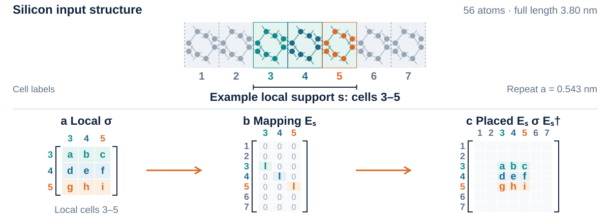
Add the reference contributions. Reference-seeded SCBA then updates Σ.
Using the constructed self-energy directly omits cross-region pairs.
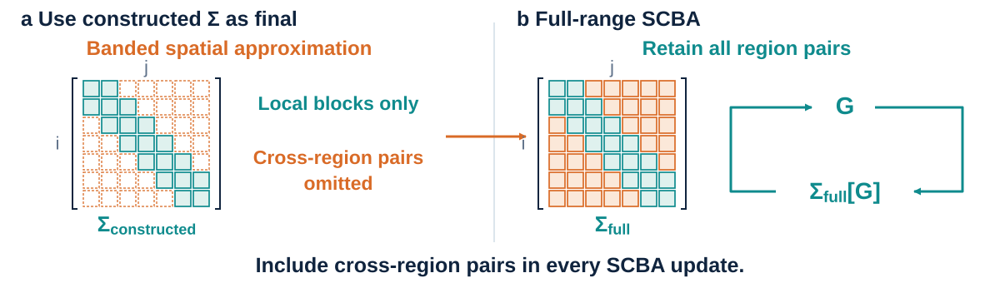
Remove the spatial restriction by retaining all region pairs in target SCBA.
The full device contains 56 Si atoms, including the harmonic buffers.
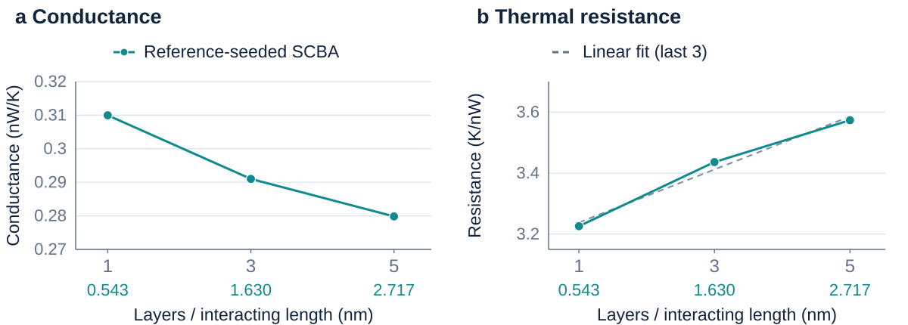
The current reduction grows from 5.1% to 14.3%.
Five layers is the largest completed microscopic benchmark in this series.
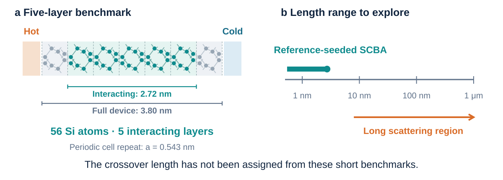
The long-length crossover remains beyond these short benchmarks.
Which information can a periodic lattice transfer to a longer scattering region?
Δ: frequency shift. Γ: damping.
Populations depend on the whole device.
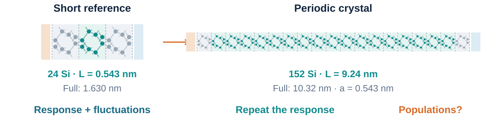
Transfer the reference response; solve the phonon populations globally.
Assume local FDT sources at one unknown temperature Tᵢ per section.
Repeat the shifts and damping.
One unknown Ti per local section.
Same form as a thermal reservoir.
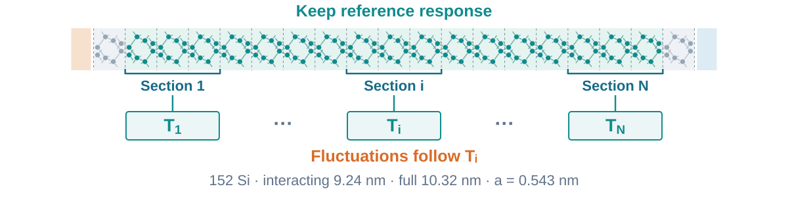
FDT models the sources. Full-device Green functions determine the populations.
Fixed boundary temperatures and zero net power determine all Tᵢ.
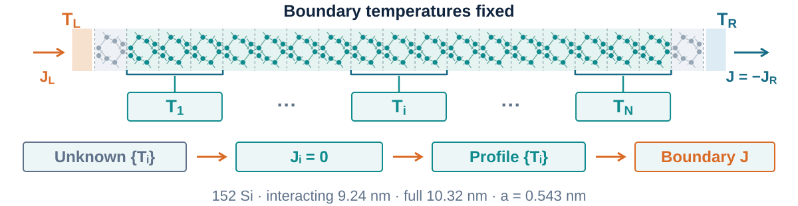
Transport balance determines every internal source temperature.
Both methods give nearly the same heat current in the tested short devices.
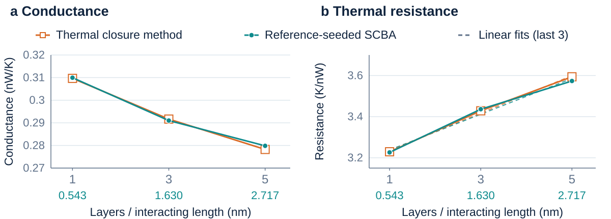
The largest conductance difference is 0.57%.
The same reference lets us calculate interacting regions up to about 1.5 μm.
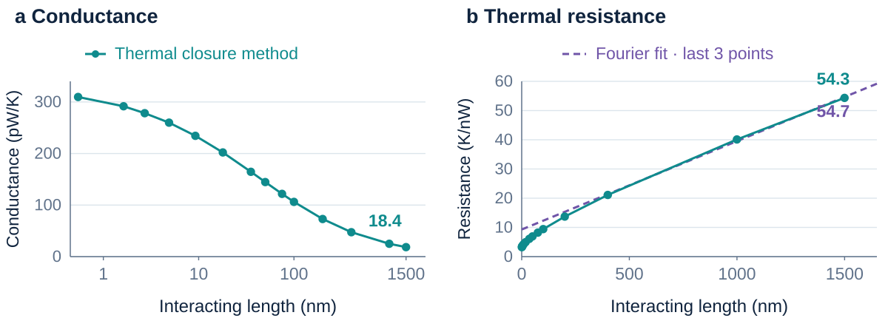
At 1.5 μm: 18.4 pW/K conductance and 54.3 K/nW resistance.
The new 1–1.5 μm interval gives an interior exponent of 0.20.
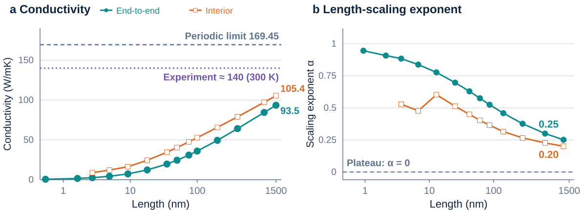
Interior conductivity rises from 97 to 105 W/mK over 1–1.5 μm.
Three approaches extend the accessible system size.
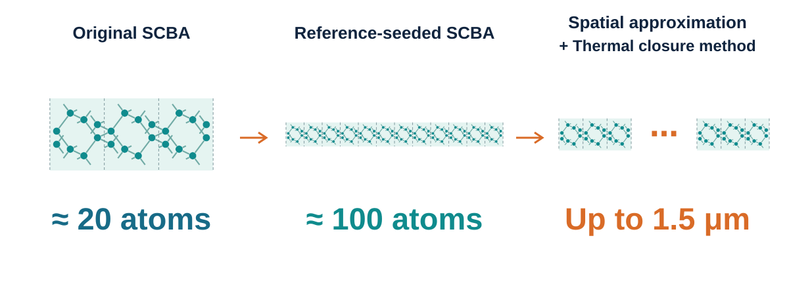